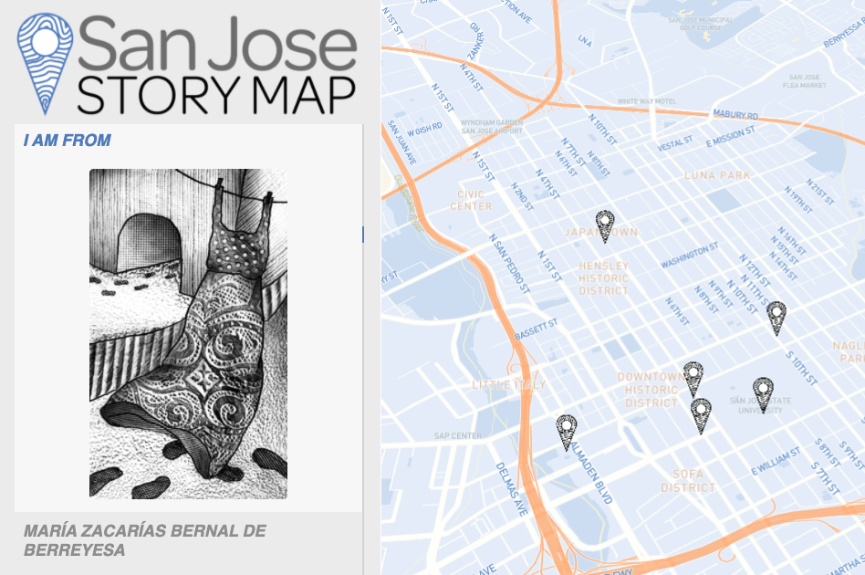
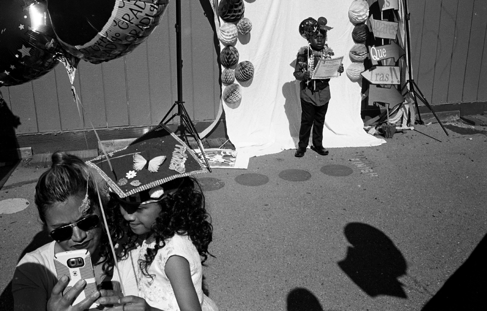

The ‘San José Story Map Project’ aims to use the power of stories to reveal San José in a new and different light. This two-year project will help create a digital map that showcases the rich histories and vibrant cultures found in our beloved City of San José and beyond.
The San José Story Map is part of San José State University's Deep Humanities Initiative. It promotes Socially Responsible Technology through a series of activities leading to the creation of an interactive, multimedia, digital San José Story Map.
During 2020 & 2021 year our team will be collecting the stories and testimonials that will provide content for the digital map. In addition to production workshops, the project team will organize an online story contest in 2021 through the San José Public Library network. Winning entries from the contest will be included in the digital map.
In the second year of the project, our team will build the virtual map of San José utilizing the stories/testimonials we collect. The stories/testimonials in the map will be multimedia (videos, photos, written text) and multigenre (poetry, prose, performance). They will uncover hidden histories, untold stories, and unheard voices from the diverse communities in San José.
Visit the The Curated SJ Story Map (Beta Site) For it’s first iteration 23 artists and writers were invited to submit their stories to the San José Story Map. Visit the Beta site here. |
Submit to the Poetic Postcards Poetry, Art, & Design Contest What San Jose is to you? Is it an iconic place? A life experience? A memory? A frame of mind? How would you capture something essential about the city on a postcard? *** Submission Deadline Extended through March 15! *** Join artist Emilio Banuelos and writer Sally Ashton who will lead a group of SJSU student writers and artists to consider just that. |


Wish You Were Here & Poetic Postcard exhibition workshops begin. This is a series of workshops that will help develop new skillsets for the San José Story Map contest.
A two part series writing workshop. First part for SJSU students. Second part open to the SJ community. Each workshop lead by a local writer.
Winners will be announced by Friday Dec 11th. Exhibition at Natalie & James Thompson Gallery Spring 2022

Co-Director
Rhonda Holberton, Assistant Professor of Digital Media at San José State University. Holberton is the co-director the San José Story Map project. Her multimedia installations make use of digital and interactive technologies integrated into traditional methods of art production. Her work is included in the collection of SFMoMA and has been exhibited at CULT | Aimee Friberg Exhibitions, FIFI Projects Mexico City; Yerba Buena Center for the Arts; The Contemporary Jewish Museum, SF; San José Institute of Contemporary Art; and the San Francisco Arts Commission.

Co-Director
Revathi Krishnaswamy is co-leader of the San José Story Map project. She is a Professor in the Department of English & Comparative Literature at San José State University, and heads the Deep Humanities & Arts Initiative to promote responsible tech. She is currently a Public Voices Fellow with The OpEd Project.
This project was made possible with support from California Humanities, a non-profit partner of the National Endowment for the Humanities.
Wish You Were Here grew out of a series of brainstorming sessions with the Natalie & James Thompson Gallery and faculty from Art & Design departments at San José State University about ways to meaningfully connect the themes from the San José Story Map with the visual arts while sheltering in place.
Students from across disciplines as well as the greater San José Public are invited to attend a series of workshops to help translate their personal experiences of living/working in San José into visual form that can be adapted into a postcard format. The workshops will culminate in a design contest that runs from Nov 1 - Dec 1 and return 1 winning kiosk design (for postcard distribution and return) and 15 postcard designs that will be printed in runs of 500 each.
In the Spring 2021, the Thompson Gallery will feature an exhibition of ‘correspondence art’ mailed to the gallery or dropped off to the kiosk. A digital exhibition of submitted designs (hosted by San José Story Map) will go live at the same time.
Wish You Were Here serves as way to collect multidisciplinary contributions of visual & text based work focused on placemaking in San José with sub-themes of:
To ground the students exploration of alternative exhibition formats, a panel featuring the directors of 5 Bay Area Alternative Art Exhibition Platforms will discuss the ways they have responded to Social Distancing as well as lasting impacts this time might have on platforms for art viewership and production.